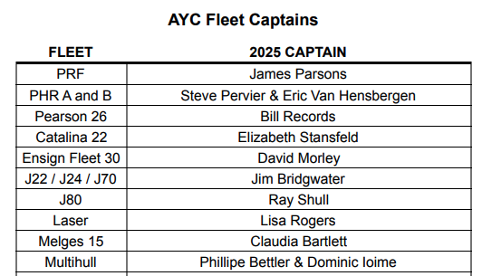
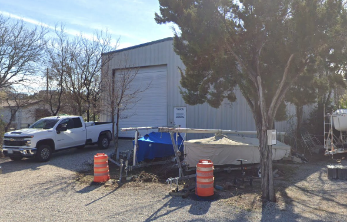
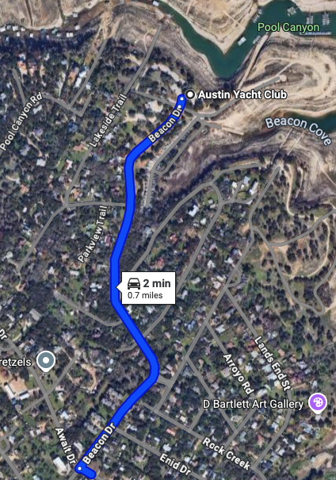
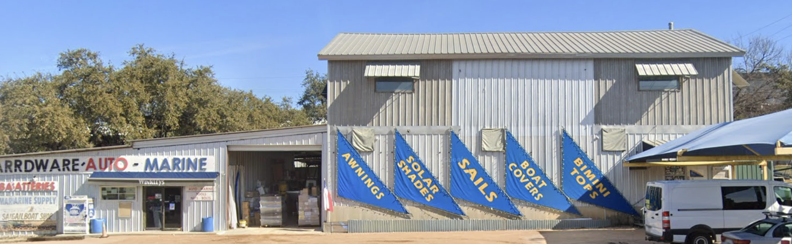
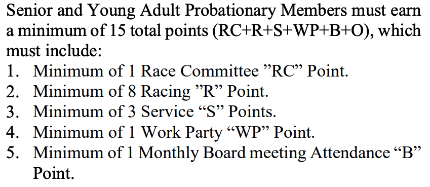

Is it a good day to come to the club?
The club has a live webcam and weather station on Lake Travis, updating every few minutes:
 Looking East · 090°
Looking East · 090°
Want to be successful? Show up and be seen!
Join our Facebook Group
Connect with fellow members and stay updated on club activities
Ready to Race Single Handed?
View Racing ScheduleHave a Laser or Sunfish? Join 20+ other sailors for Wednesday evening races!
Want to Crew on Someone's Boat?
Show Up & Sail
Come to any race and sit on the crew bench - someone will pick you up! We always clear the crew bench.

Below the AYC Clubhouse: Google Maps Link
Online Crew List
Join our crew finder email list to connect with boat owners looking for crew
ayc-find-a-crew@googlegroups.comThis Group was made by former commodore Russ Shermer
Want to know what's happening this week at the club?
View AYC CalendarWant to know who to contact to learn more?
Find the Fleet Captain or Committee Member you may be looking for here:
View AYC Committees and Fleet CaptainsThe list will look like this:

And AFTER SIGNING IN you can search for their information here:
Reaching out to your fleet captain is a great way to integrate yourself!
If you break your boat or are looking to buy or repair a boat
You'll have to pass by member Fred Schroth's fiberglass repair shop on the way in and out of the club:


It's okay to walk in and say hi
Also check out member John Bartlett's business:

Bartlett Sails & Canvas - Since 1987, central Texas' sewing and canvas authority for outdoor and industrial applications. Specializing in sail making, boat canvas, biminis, and custom marine solutions.
Contact: 512-266-1895 | bartlettsails@gmail.com
Location: 4415 Hudson Bend Rd, Austin TX 78734
Visit Bartlett Sails & Canvas WebsiteProbationary Points
Starting on page 12 of the handbook (austinyachtclub.net/handbook/), you'll find you'll need to interact with the club to become a full member:
Senior and Young Adult Probationary Members must earn a minimum of 15 total points, which must include:

How we recommend earning them
Race Committee
Show up well before a race. Next to the crew bench is the race committee locker, where you'll be able to hop on the RC boat and learn how it works. We need RC every Wednesday night.
Races
Show up and race or crew.
Work Party
Reach out to the head of buildings and grounds to find out when the next one is.
Social
Look on the calendar for who may be running an event and offer to help.
Board Meetings
Board meetings are the 4th Thursday and can be found on the AYC calendar (austinyachtclub.net/full-ayc-calendar/). Just show up and watch the process.
Feeling lost? Call Jackie, our general manager, at +1 512 266 1336 to get recommendations on how to earn these points.